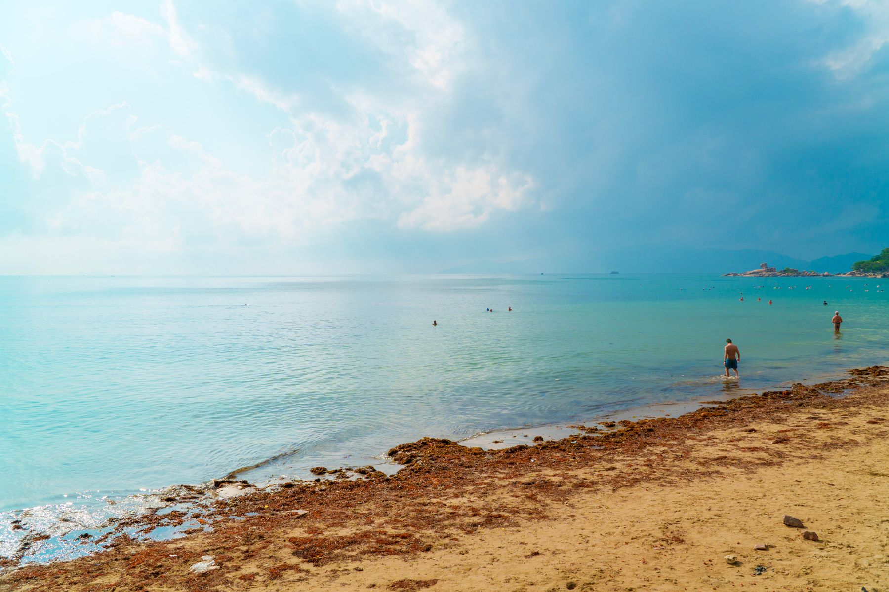
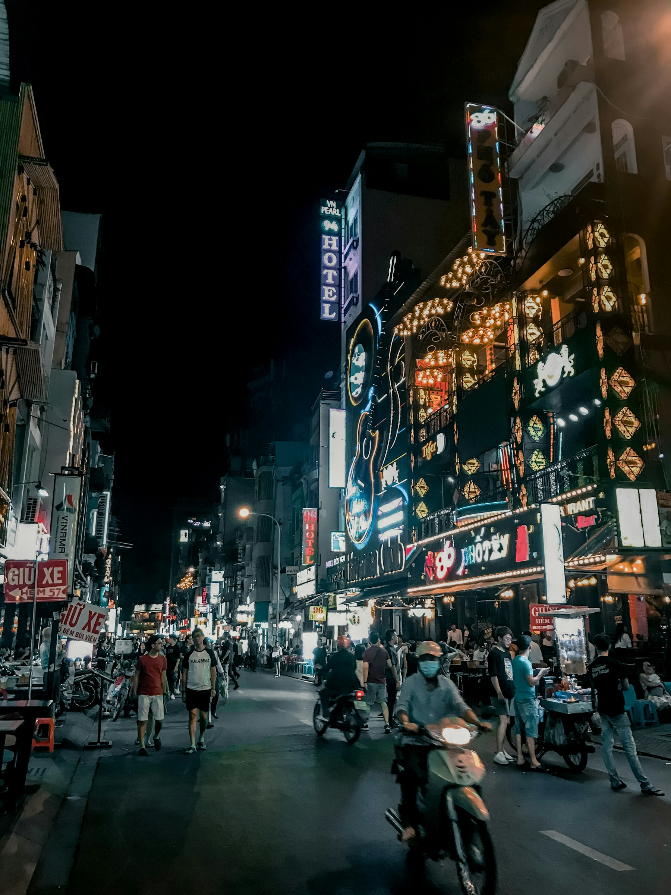

1월 30일 토요일 저녁
14시 학원 종료 후 집에 들르지 않고 공항으로 갈 수 있다면 가장 효율적입니다. 16시 30분 전후 공항 도착을 목표로 합니다.
우선 시간대19:20 전후
호치민4박
베트남 호텔20박
2027.01.30 — 02.20
관광지를 세는 대신 한 도시에 오래 머뭅니다. 아침에는 함께 달리고, 더운 오후에는 호텔과 카페에서 쉬며 우리 둘만의 작은 게임을 만듭니다.


이 일정의 중심 원칙
호치민에서 나트랑으로 이동한 뒤 설 핵심 기간에는 한 호텔에 고정합니다. 항공·도로 혼잡을 피하고, 문 닫는 식당이 있어도 호텔 조식과 시설을 생활의 안전망으로 둡니다.
01 · Route
호치민의 에너지로 시작하고, 나트랑에 오래 머무르며, 큰 짐 없이 달랏만 3박 다녀옵니다.
도시 적응과 첫 게임 아이디어
Tết 주간 한 숙소 고정
작은 가방으로 고원 3박
같은 호텔로 돌아와 귀국 준비
Departure choice
여행의 구조는 어느 날을 골라도 무너지지 않습니다. 아이의 피로와 공항까지의 실제 시간을 기준으로 선택합니다.
14시 학원 종료 후 집에 들르지 않고 공항으로 갈 수 있다면 가장 효율적입니다. 16시 30분 전후 공항 도착을 목표로 합니다.
집에 다시 들러야 하거나 아이가 피곤할 것 같다면 이 안이 낫습니다. 호치민이 하루 줄 뿐이고 나머지 일정은 같습니다.
Move strategy
국제선은 인천→호치민, 깜란→인천을 다구간으로 비교하고 국내선은 2월 3일 SGN→CXR만 별도로 확보합니다.
학원 뒤 19:20 전후 직항 우선
Tết 혼잡 전 오전·낮 직항
전용차 또는 평 좋은 리무진
낮 이동 후 캐리어 수령
야간 직항 · 2/20 도착 예상
현재 발표된 2026/27 동계 일정에는 1월 30일 ICN→SGN 19:20 출발편이 있습니다. 실제 예약일의 운항요일·수하물·최종가는 결제 화면에서 다시 확인하세요.
02 · Day by day
관광·러닝·게임 만들기를 같은 날 모두 하지 않습니다. 긴 이동 다음 날과 설 당일은 의도적으로 비워 두었습니다.
03 · Stay
더블과 트윈은 가격과 숙면 기준으로 유연하게 고릅니다. 이번 여행에는 에어비앤비보다 24시간 프런트가 있는 호텔이 잘 맞습니다.
2인 1실 · 더블/트윈 유연 선택
1군 · 늦은 도착과 시내 산책에 편리
전·후반 같은 호텔 · 2인 1실
해변·카페·러닝 시작점 도보권
구 Golf Valley · 더블/트윈 선택
중심 접근성 + 객실 책상·고속 Wi-Fi
Nha Trang → Da Lat → Nha Trang
객실을 비운 3박 동안 보관하는 것이므로 무료라고 단정하지 않습니다. 전·후반 예약번호를 함께 보내고, 호텔의 보관 가능 여부와 비용을 글로 답변받은 뒤 예약을 확정합니다.
04 · Morning Run
이틀에 한 번, 대화 가능한 속도가 기본입니다. 피곤하거나 비가 오면 호텔 헬스장 30—40분으로 바꿉니다.
여권은 금고에 두고 휴대전화는 손에 들지 않습니다.
오토바이가 인도·횡단보도로 들어올 수 있어 이어폰은 한쪽만 씁니다.
나트랑의 바람과 달랏의 안개에는 거리를 줄입니다.
수분을 보충하고 관광은 한낮을 피해 시작합니다.
05 · Father & Son Studio
매일 공부시키는 계획이 아니라 여행에서 본 것들을 작은 게임으로 남기는 프로젝트입니다. 하루 60—90분, 긴 관광일에는 과감히 쉽니다.
아들이 장르와 주인공을 고르고, 아빠가 AI에게 질문할 프롬프트를 함께 정리합니다.
키보드나 터치로 움직이는 첫 화면을 만듭니다. 점수 하나, 장애물 하나면 충분합니다.
호수·소나무·안개에서 색과 배경을 얻고, 캐릭터의 짧은 이야기를 붙입니다.
서로 플레이하며 버그와 난이도를 고친 뒤, 마지막 날 작은 발표회와 영상을 남깁니다.
06 · Eat & See
오전 관광 하나와 편한 식사 하나면 충분합니다. 설 연휴 영업과 2027년 요금은 출발 1~2주 전에 다시 확인합니다.
하루 한 끼는 로컬식당, 한 끼는 냉방·화장실이 안정적인 식당으로 섞습니다. 해산물은 주문 전에 kg당 가격과 조리비를 확인합니다.
07 · Budget
정확한 운임과 호텔 요금이 확정되기 전의 계획 범위입니다. 조식·헬스장·편한 이동을 먼저 지키고 고가 체험을 줄입니다.
쇼핑·주류·고급 해산물·개인 의료비는 제외했습니다. 실제 예약 후 다시 합계를 맞춥니다.
08 · Before you go
무료취소가 가능한 것부터 잡고, 출발일과 설 특별운영이 확정될 때 한 번 더 정리합니다.
1/30 ICN→SGN, 2/19 CXR→ICN을 함께 비교
오전·낮 직항과 위탁수하물 포함가 확인
전반 8박 + 후반 5박, 같은 호텔·같은 객실등급 우선
두 예약번호와 2/11—14 보관 요청을 서면으로 남기기
3박 숙소와 낮 시간 전용차·리무진 확보
Tết 휴무, 항공시간, 식당·관광지 특별영업 확인
현재 대한민국 일반여권은 최대 45일 무사증 체류 대상입니다. 입국일 기준 여권 유효기간 6개월 이상을 확인합니다.
대사관 안내 ↗호치민·나트랑은 덥고, 달랏 아침·밤은 서늘합니다. 통기성 좋은 옷과 후드·얇은 바람막이를 함께 챙깁니다.
아이와 큰 짐이 있을 때는 오토바이보다 차량을 기본으로 합니다. 달랏 왕복은 낮 이동을 우선합니다.
노트북 로컬과 클라우드에 매일 백업합니다. 여행 중에는 개인정보나 결제정보를 AI 프롬프트에 넣지 않습니다.
일정·시설·운항 정보 확인일은 2026년 9월 29일입니다. 2027년 요금·재고·운항·특별영업은 바뀔 수 있습니다.
나트랑·호치민 사진은 기존 다낭 포함 수첩의 라이선스 표기를 따르며, 달랏 이미지는 이 수첩을 위해 제작한 벡터 일러스트입니다.